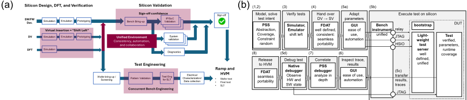
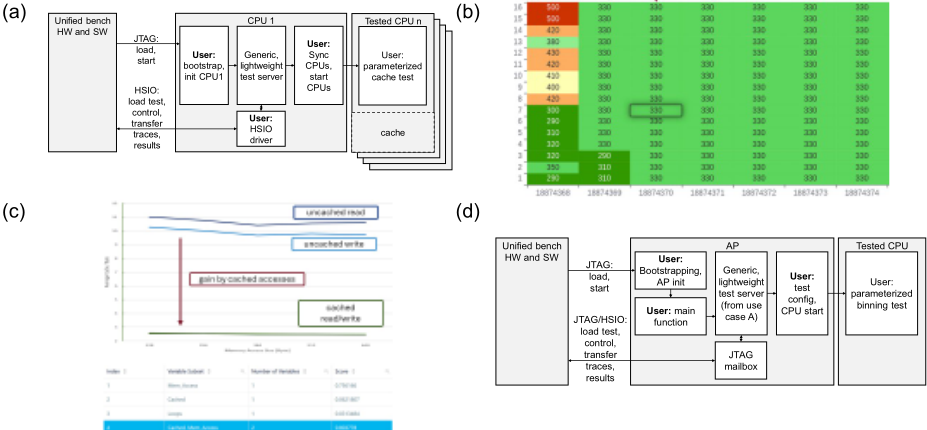

通过基于 PSS 的设计验证、硅后验证与 ATE 统一环境加速芯片 sign-off
论文针对 SoC 复杂度上升导致 device sign-off 阶段 DV、SV 与 TE 团队工具和测试内容格式割裂、缺乏从 pre-silicon 验证到 bench/ATE 硅后验证系统性流程的问题，提出基于 Portable Test and Stimulus Standard (PSS) 的统一软硬件环境。方法上以 PSS 抽象测试意图并与测试实现解耦，新增纯 PSS 实现的 runtime 参数/结果 API 层，配合 FDAT 测试数据容器、统一 bench 仪器 SiConic Link 与 bench 软件 SiConic Explorer，实现测试内容跨团队无缝移植、Shmoo/batch 参数空间自动探索、trace 与测试意图关联及 Lauterbach 原生调试。Qualcomm 的 CPU binning 用例验证了流程可行性，免除了 binary-to-pattern cyclization 并提升调试可观测性。关键结论：硅上执行较仿真快 10^5~10^6 倍可加速 coverage closure，每个 debug 周期节省数小时至数天，PSS 另带来约 5 倍生产力提升。
SoC 复杂度不断提升使 device sign-off 需要 DV（设计验证）、SV（硅后验证）与 TE（测试工程）团队协作，但三个团队使用不同工具与测试内容格式、工作流相互割裂，缺乏从 pre-silicon DV 到 bench 或 ATE 硅后环境的系统性流程，造成不一致、低效与相关性问题；测试二进制转 ATE vector pattern 需要长时间仿真且每次修改都需重跑，pattern 失败与实际 HW/SW 行为的关联调试可观测性差、依赖多领域专家共同参与。
构建基于 PSS 的统一软硬件环境：(1) 用 PSS 建模测试意图与 coverage，解耦测试意图与测试实现；(2) 用原生 PSS 语言特性实现 runtime 参数/结果 API 层，借助 Cadence Perspec 的 reflection API 在 post_solve 检查模型并自动生成描述 DUT 内存布局的 C 代码与 getter 函数；(3) 通过 linker script 定义的内存段与 ELF 二进制构成简单二进制接口，bench 软件按地址在仪器与 DUT 内存间传输参数与结果；(4) 引入 FDAT（functional test data container）zip 容器承载测试二进制、调度序列与调试源码，实现 DV/SV/TE 间自包含、可扩展的移植；(5) SiConic Explorer 提供 GUI 与脚本 API，支持 batch/Shmoo 参数空间自动探索、trace 可视化与最具影响参数集排序分析；(6) SiConic Link bench 仪器以行业标准 debug/HSIO 接口、风冷与 bench 尺寸将 ATE 级可靠性带入 SV lab；(7) DUT 上的轻量 test server 经 syscall 接口支持消息传递与执行控制，配合 Lauterbach TRACE32 原生 SW 调试与 Verisium 的 trace-场景关联分析。
硅上执行比仿真快 10^5 到 10^6 倍，从而加速 coverage closure
直接在硅上执行测试二进制，避免了每次 debug 迭代中 binary-to-pattern 转换所需的数小时 RTL 仿真
避免跨团队交接与组织 debug 会议的死区时间，每个 debug 周期节省数小时至数天
结合 PSS 带来的约 5 倍生产力提升（从 DV 到 silicon，引自文献[6]），显著改善 TTM 与 TTQ
Qualcomm 团队成功将流程用于 SoC CPU binning 测试的配置、bring-up 与调试，早期经 JTAG 通信、HSIO 驱动就绪后无缝切换到 USB
用例 A 在 Xilinx Zynq UltraScale+ MPSoC（4 个 Cortex A53、MMU、DDR、SRAM）上完成 multicore cache access 测试的 Shmoo 参数空间探索与最具影响参数集排序分析
相对已有工作，论文把 PSS 从 DV 侧测试生成扩展为贯穿 DV/SV/TE 的统一 sign-off 环境：新增纯 PSS 实现的 runtime 参数/结果 API（基于 reflection 自动生成目标代码与内存布局）、基于 ELF 内存段的二进制参数/结果接口、可扩展的 FDAT 测试数据容器，以及将 ATE 级可靠性与执行速度带入 SV bench 的专用仪器与软件，使测试二进制免 cyclization 直接在硅上执行，并支持参数空间系统化探索与 trace-测试意图关联，打破团队间工具与格式壁垒。
相关度级别：medium
命中能力域：2.7 CyberSec/自动化
理由：论文核心是 PSS 驱动的功能测试自动化与 DV/SV/ATE 统一流程，不直接命中团队的 Scan/ATPG、BSCAN、OCC/LBIST、HBM4/UCie DFT/ATPG、功能安全机制或 fault simulation 等核心技术；但其『测试意图与实现解耦+自包含容器+统一 API』的自动化方法论与 2.7 工程自动化方向相关，可借鉴到 DFT sign-off checklist、flow log sanity check、ATPG release package 等交付物的结构化打包与跨团队交接自动化；论文对 binary-to-pattern cyclization 成本、ATE 测试时间稀缺与 pattern 失败关联调试困难的论述，对团队 ATPG release package 与 gate-level 仿真交付场景有间接参考价值。
建议动作：作为方法参考存档
| 0 | 1 | 2 |
|---|---|---|
| Maximilian Suckert Advantest Europe GmbH Germany Nandeep Devendra | Sergey Khaikin Cadence Design Systems, Inc. United States | Arjun Ashok Vazhayil Qualcomm Technologies, Inc. United States |
| Qualcomm Technologies, Inc. United States | Abhijeet Samudra Advantest America, Inc. Germany Moshik Rubin Cadence Design Systems, Inc. Israel | Klaus-Dieter Hilliges Advantest Europe GmbH Germany |
| 0 | 1 | 2 |
摘要 - 随着片上系统（SoC）复杂度的日益提升，在器件签核（device sign-off）过程中解决数字测试挑战，需要设计验证、硅验证与测试工程团队的协作。本文提出了一种基于可移植测试与激励标准（Portable Test and Stimulus Standard, PSS）的统一软硬件环境，用于参数化功能数字测试的开发与硅后执行。这种统一平台的方法促进了各工程团队之间的协作，从而实现更优的质量达成时间（Time-to-Quality, TTQ），同时缩短上市时间（Time-to-Market, TTM）。
由先进工艺节点和数字器件新型封装技术所驱动的设计复杂度不断攀升，需要新颖且创新的测试方法来克服当今的上市时间压力。这些新需求贯穿价值链的所有环节，促使硅前设计验证（Design Verification, DV）、硅验证（Silicon Validation, SV）和测试工程（Test Engineering, TE）团队在器件签核期间协同工作。从硅前设计验证到硅验证——无论是在实验室台架环境还是自动测试设备（Automated Test Equipment, ATE）环境中——都缺乏系统化的流程，这造成了不一致性、低效率以及相关性问题。为弥合这一差距，我们提出了一种用于测试期间器件点亮与操作的统一环境。该环境基于可移植测试与激励标准（Portable Test and Stimulus, PSS），使 DV 团队既能够直接在硅片上执行测试，又能够通过共享测试内容与 SV 和 TE 团队开展协作。
该统一环境（图 1a）使 DV 能够在硅后台架环境中对硅前工作形成补充，以提高功能覆盖率并加速覆盖率收敛。DV 受益于在硅片上比在仿真器和模拟器上更快的执行速度。对于无法被正确仿真的测试内容（例如线程行为或精确功耗），可以在硅片上便捷地完成其签核与调试。
器件签核完成后，DV 可以向 TE 提供经过验证的定向功能测试，用于 ATE 上的大批量制造（High Volume Manufacturing, HVM）。这些测试带有源自测试意图 PSS 模型的明确已知的缺陷覆盖率。统一环境中面向 TE 的流程细节在 [1] 中描述。
如今，DV、SV 和 TE 团队使用不同的工具和格式来处理测试内容，他们的工作流程彼此分离。PSS 建模引入了一个抽象层，用于将测试意图与测试实现解耦，并在片上系统（SoC）层级描述测试。统一环境引入了定义良好的应用程序接口（API），用于控制在硅片上的测试执行以及打包测试内容，从而实现团队之间的无缝可移植性。

由 SV 操作的复杂且非标准化的硅后台架设置通常由来自多家厂商的仪器组成。在没有 SV 专家支持的情况下，DV 团队无法使用这些设置来可靠且可重复地执行测试。统一环境引入了一种具备行业标准接口的台架仪器，以及用于仪器配置和测试执行的软件。该软件环境具有图形用户界面（GUI）和脚本 API。在 SV 工程师完成台架的初始设置后，DV 团队即可独立地在硅片上执行和调试测试。
自动测试设备（ATE）同样具备高度标准化的接口，能够支持可靠且可重复的执行，但既复杂又昂贵。工业级供电与散热要求是物理层面的限制，阻碍了硅验证（SV）与测试工程（TE）实验室的规模扩展。生产设备往往必须共享，这使得 ATE 测试时间成为一种稀缺资源。ATE 软件的设计目标是优化测试时间并高效利用 ATE 仪器，其操作需要 TE 专家的支持。相比之下，统一台式仪器采用风冷、标准电源和台式外形尺寸，并配备专为器件与测试签核量身定制的软件 API，即使在没有工业级能力的设施中，也能够扩展部署多个一致的测试环境。
为了在器件表征期间采集数据以及进行大批量制造（HVM）测试，必须将测试二进制文件转换为 ATE 向量图形。每当测试二进制文件发生任何修改时，这种转换都需要长时间的仿真。图形的执行受制于硬件（HW）与软件（SW）行为可观测性差的问题。将图形失效与实际硬件及测试软件相关联十分繁琐，需要与众多领域专家共同开展调试。基于 PSS 的统一软件环境与台式仪器支持原生的系统内调试，并能够将 PSS 测试意图与测试轨迹相关联。在统一软件环境中，我们引入了用于运行时参数与运行时结果的 PSS API。运行时参数与结果使得能够以系统化、覆盖率驱动且自动化的方式探索测试参数空间。
在本节中，我们详细介绍使设计验证（DV）、硅验证（SV）和测试工程（TE）工程师能够在器件签核期间高效协作的统一环境。高效协作是通过采用通用的方法学来实现的，这些方法学用于创建、共享和调试测试内容，以及分析测试结果和覆盖率。
图 1b 展示了工作流的步骤以及支持该工作流的统一环境的各个组件。该统一环境支持跨 DV、SV 和 TE 的统一工作流的以下步骤。(1) DV 团队使用 PSS 对测试意图和覆盖率进行建模。测试意图包括片上系统（SoC）IP 的点亮（bring-up）和功能测试。专用的 PSS API 层支持以运行时参数与运行时结果对测试意图进行建模。(2) PSS 工具在指定的约束与覆盖率语句范围内推导出解，并生成目标代码。(3) DV 团队在仿真与硬件仿真环境中验证测试（测试意图的解）以及硅执行环境（例如启动、测试加载）。(4) DV 团队使用支持无缝可移植性的功能测试数据（FDAT）容器将测试传输至 SV 台架。随后，DV 和 SV 团队在 SV 台架上验证该测试。这包括 (5a) 在测试参数空间中探索测试行为，(5b) 执行测试，(5c) 记录轨迹并捕获结果，以及 (5d) 使用原生 SW 调试器调试测试并检查被测器件（DUT）的状态。具备图形用户界面（GUI）和脚本接口的统一台架软件支持这些步骤。(6) DV 和 SV 工程师在 GUI 中对轨迹和结果进行可视化与分析。(7) DV 和 SV 工程师在 PSS 工具中将轨迹与测试相关联。(8) 签核后，如 [1] 所述，使用 FDAT 将测试共享给 TE 以用于大批量制造（HVM）。
使用 PSS 对测试意图进行建模，并将测试意图与针对特定目标的测试实现相分离，引入了一个抽象层级，从而简化了测试和方法学在不同团队（DV、SV、TE）之间的可移植性。这些团队可能使用不同的目标（仿真、硬件仿真、原型验证、硅后）以及不同的项目。
PSS 使用户能够在给定的约束条件和覆盖率目标内对测试意图进行抽象和求解。PSS 求解器针对给定的测试意图提供一组有效且一致的测试，并满足覆盖率目标。面向 PSS 的电子设计自动化（EDA）生态系统通过用于求解流程的调试器，以及用于可视化测试并将运行时轨迹与测试相关联的图形化工具，简化了测试分析。PSS 使得在硅后测量功能测试的覆盖率成为可能，并引入了用于追踪测试行为的统一接口。
在本工作中，我们利用原生 PSS 语言特性实现了一个 PSS API 层，用于对运行时测试参数和运行时测试结果进行建模。运行时测试参数允许用户在运行时修改测试的行为。将运行时测试结果（例如传感器读数、寄存器状态）作为测试参数的函数进行捕获，使得探索测试的运行时行为成为可能。用户可以直接分析所捕获的结构化结果，而无需从测试轨迹或迭代式寄存器转储中提取、格式化或清洗数据。
在建模运行时参数和结果之前的第一步，测试建模人员需要选择测试中应在运行时可供修改和捕获的参数和结果。该 API 在组件层面仿照 SoC 的架构，将这些参数和结果按组件组织成集合（图 2）。用户在其 PSS 组件中，将这些集合声明为派生自一个专用基础结构体类型的 PSS 结构体（struct）（图 2a）。集合成员的取值范围通过 PSS 约束（constraint）给出。为了发布集合成员的描述，我们使用了 PSS 工具特有的一项特性（Cadence Perspec System Verifier 的 @tooltip）。为了初始化参数并触发目标代码生成，用户为所有结构体实例调度一个初始化动作（action）（图 2b）。用户在测试实现（PSS 动作的 exec 块）中通过值或句柄引用这些集合。值和句柄由 getter 函数提供。为了将 getter 函数与一个集合的 PSS 结构体关联起来，我们采用了 PSS 核心库针对寄存器的设计模式，在一个专用的 PSS 组件中引用该 getter 和 PSS 结构体。借助这种方法，用户可以遵循熟悉的概念对集合进行建模。实践证明，为完整组件的集合转发句柄，对 PSS 测试编写者与 C 目标函数实现者之间的接口大有裨益。这是因为为目标函数添加参数时，无需修改 PSS 代码、C 源文件和 C 头文件中的函数签名（图 2e）。
PSS API 生成描述运行时参数和结果内存布局的 C 代码（图 2c、d）。对于每个集合，我们生成提供指向该集合内存位置的指针的 getter 函数。为了进行目标代码生成，我们在第一步中使用 Cadence Perspec Verifier 专门提供的反射 API（reflection API）检查集合的 PSS 模型。为此，我们在 post_solve 步骤中检查派生自运行时参数和结果基础类型的所有结构体实例的属性。第二步，我们生成目标代码，
为了可靠地修改运行时参数并捕获运行时结果，我们定义了一种简单的二进制接口。新的台架软件（bench SW）环境支持专用的存储器段，用于存放参数和结果。这些存储器段的地址在测试源代码构建的链接阶段确定，并存储在 ELF 二进制文件中。用户在其链接脚本（linker scripts）或分散加载文件（scatter files）中声明这些存储器段。
台架软件环境根据测试二进制文件中定义的存储器地址，在台架仪器与被测器件（DUT）存储器之间传输参数和结果数据。无需为参数和结果的传输编写专门的脚本。
为了在设计验证（DV）、硅验证（SV）与测试工程（TE）各工程团队之间实现测试内容的无缝、自包含可移植性，我们提出了功能测试数据容器（FDAT）。FDAT 是一种定义良好、与测试插入方式无关的测试传递接口 [2]。一个 FDAT 中包含测试二进制文件、这些二进制文件的调度序列，以及可选的用于调试的源文件。FDAT 可通过用户内容进行扩展，例如文档、测试版本信息或追踪解码信息。因此，FDAT 支持用户添加流程增强功能并传递补充性工件。这种可扩展性使统一环境能够与用户现有的测试框架和工具集成。
FDAT 是一个具有单层目录结构的 zip 容器。用户可以在其现有的、通常基于脚本的测试生成框架中快速完成测试内容的打包设置。调度序列采用 XML 声明，并且在大多数用例中可以方便地通过模板生成。
我们介绍一个软件框架，用于测试管理以及配合新型台式仪器自动执行测试。该框架支持以项目形式组织测试、配置台式仪器，并通过批量与 Shmoo 测试执行对参数空间进行自动化、系统化的探索。GUI 前端支持快速周转、交互式探索和调试任务。借助脚本 API，用户可以自动化例行任务，并将项目管理和台式仪器集成到其测试框架中。后端可以控制台式仪器和 ATE，以收集用于比较台式与 ATE 上测试行为的数据。
统一且可靠的台式仪器是在单个项目内、跨项目以及跨设计验证（DV）、硅验证（SV）和测试工程（TE）团队扩展该流程的关键。为实现扩展，我们将激励和监测被测器件（DUT）所需的所有接口集成到一个新型单台台式仪器中，该仪器具备自动测试设备（ATE）的可靠性与执行速度。为了无缝融入 SV 实验室环境，该仪器为各接口采用行业标准连接器，具有台式仪器的外形尺寸，并采用风冷散热。
为便于启动和控制 DUT 与测试服务器（见 II-G）、下载测试，以及在测试过程中观察软件和硬件，该新型台式仪器配备了行业标准的调试与控制接口，以及 DUT 的原生高速输入输出（HSIO）接口。
我们使用调试接口（如 JTAG、SPI、UART 或 I2C）来引导启动 DUT、下载 HSIO 驱动程序和测试服务器，并连接软件调试器。我们使用 HSIO 接口来下载测试、控制测试服务器，以及传输测试活动的跟踪数据与结果。对原生 HSIO 接口（USB、PCIe、ETH）的支持使测试二进制文件能够直接传输到 DUT 存储器。相比之下，由 ATE 数字卡激励的高引脚数并行测试接口则需要将二进制文件循环化为 ATE 测试图形。
用于传输测试、参数、跟踪数据与结果的明确定义的接口，确保了测试设置的一致性与首次即正确、测试结果的可靠可观测性以及跟踪数据的捕获。我们开发了一个轻量级测试服务器，它在 DUT 上对接实验台仪器与测试之间在调试接口和 HSIO 接口上的通信 [3]。

对于实验台软件（SW）与测试服务器之间的通信，我们引入了一种简单的高速协议，该协议支持与 DUT 存储器之间的双向数据传输、运行时消息传递以及测试执行控制 [4]。测试服务器通过一个简单的 syscall 接口与测试进行消息传递和执行控制方面的对接。该接口包含用于发送跟踪消息和返回退出码的函数。
对于用户器件，测试服务器核心功能的（完全可修改的）代码必须与器件专用的 HSIO 驱动程序集成。在项目早期阶段，如果 HSIO 驱动程序尚不可用，则支持通过调试接口进行通信。
为了探索和调试测试软件的行为以及识别硬件问题，全面的可观测性以及将捕获的结果和跟踪作为测试参数的函数进行清晰显示，对于高效的分析和关联而言具有决定性意义。
图形用户界面（GUI）提供多种查看器，可在执行测试、Shmoo 或批量运行之后立即对活动跟踪和测试结果进行可视化检查。预先配置的绘图视图支持对裕量进行检查，或便于识别测试失败项和异常值，以便在 EDA 场景查看器中进行后续分析。类似地，分析工具（例如对测试中影响最大的参数集进行排序）可以提供硬件（HW）问题的线索。EDA 场景查看器具备活动跟踪与测试场景相关联以及以图形方式显示跟踪的功能。通过在 EDA 工具中对跟踪进行分析，工程师可以精确定位在系统内调试过程中应设置断点的位置。
运行时消息传递支持收集数据，以便结合 EDA 工具进行运行时覆盖率分析。与仿真相比，由于在硅片上的执行速度更快，覆盖率收敛可以得到加速。
原生软件（SW）调试器使工程师能够单步执行测试代码、检查器件状态，从而分析测试硬件和被测器件（DUT）硬件的异常行为。测试软件环境与台式仪器中对行业标准软件调试器（例如 Lauterbach TRACE32）的集成支持，使设计验证（DV）工程师无需硅片验证（SV）工程师的协助即可调试其测试。
为了对该统一流程进行验证，我们在 PSS 中对一个复杂的多核缓存访问测试场景进行了建模。我们将测试服务器与 Xilinx Zynq-UltraScale+ MPSoC 的驱动程序进行了集成——该 MPSoC 配置有 4 个 Cortex A53 内核、MMU、DDR 和 SRAM——以通过 JTAG 和 USB 进行通信（图 3a）。我们利用运行时 PSS API 层，对 Cadence 面向 ARM 内核测试的验证 IP 进行了无缝参数化，并捕获了结果。
借助 GUI 前端，我们调度了一个 Shmoo，用于探索该测试在整个参数空间中的行为（图 3b）。在 GUI 中，我们对收集到的数据进行了分析，以识别出影响最大的参数集合，并根据反映各参数集合对所收集结果影响程度的评分对其进行排名（图 3c）。
引入 PSS 和 FDAT 接口，简化并精简了测试从设计验证（DV）到硅验证（SV）的交接。参数接口将测试行为从寄存器级编程中抽象出来，使得能够以测试参数的函数形式捕获行为，而不是为每个参数集合交付一个专用测试。FDAT 中包含参数的文档说明，从而避免了容易出错的参数列表交接。运行时 PSS API 采用纯 PSS 编写，因此能够直接集成到客户现有的基于 PSS 方法学构建的验证环境中。结合 FDAT 容器，这使得验证测试内容能够方便地用于在硅片上执行。引入 FDAT 容器、适配链接脚本以及集成测试服务器所需的初始工作量，通过借鉴示例和使用模板得以减轻。
在测试的调试启动阶段，团队受益于从 SV 到 DV 的精简反馈，以及 SW 和 HW（寄存器）行为可观测性的增强。这是通过运行时捕获测试轨迹来实现的，而不是在特定断点处进行寄存器转储。
通过 GUI 将 Lauterbach TRACE32 调试器连接到被测器件（DUT）——使用台架仪器中现成的调试适配器（dongle），由 SV 团队在项目启动时进行一次性配置——使 DV 团队能够独立于 SV 团队的实验室硬件专家对测试进行调试。统一流程支持在 SV 台架上验证测试。这消除了在自动测试设备（ATE）上对软件和硬件问题进行可观测性较差的数字图形调试的需要。
IP、运行时参数、运行时结果以及轨迹捕获的抽象——这些抽象使得轨迹与测试意图之间能够实现可观测性和关联——全部以纯 PSS 方式建模，并通过 FDAT 传输。与之前所使用的抽象程度较低、扩展性较差的 C 代码不同，该方法可在未来的 SoC 项目中复用和扩展。
在所介绍的使用案例中，将统一的软硬件环境应用于参数化功能测试的开发与硅后执行，使 DV 与 SV 工程团队之间的协作变得更加顺畅。基于该使用案例，我们可以推导出器件与测试签核加速方面的估算。
对于包含大量约束的大型 PSS 测试模型，每次求解运行（solve run）可能需要数小时才能得到一个解。利用运行时参数和自动化执行，DV 团队能够探索参数空间，并比在求解阶段更快地在硅片上收集覆盖率。与仿真相比，硅片上的执行速度快 10⁵ 到 10⁶ 倍，因此可以加速覆盖率收敛。此外，硅片上的执行使得能够运行那些无法以足够精度进行仿真的测试，例如线程行为或精确功耗，从而使运行时覆盖率能够提升整体覆盖率。
带有被测器件（DUT）功能接口的统一环境使 DV 和 SV 团队能够在硅片上执行测试二进制文件，而无需将其转换为 ATE 测试图形，并可利用轨迹捕获和原生软件调试器来观测和调试测试行为。直接执行二进制文件避免了每次调试迭代中二进制到图形转换所需的数小时 RTL 仿真。对 DV 和 SV 团队所使用的相同测试内容的直接可观测性，使得能够直接从轨迹中或借助系统内调试器识别软件和硬件问题。此前，需要多个领域专家的共同努力才能从图形失效中推断出实际问题。避免了交接期间以及跨团队组织调试会议时的空等时间，每个调试周期可节省数小时乃至数天的时间。
Cadence Perspec System Verifier 支持使用 PSS 3.0 [5] 对测试意图进行建模。PSS 引入了抽象建模，并使测试意图能够在 DV、SV 和 TE 环境中的多个项目以及不同目标平台之间移植。Perspec 的 PSS 求解器根据测试意图生成测试，这些测试在构造上是正确的（correct-by-construction），并根据测试意图模型中定义的覆盖率语句进行覆盖率度量。Perspec 提供用于调试求解过程的工具，以及用于对测试意图和测试解进行图形化检查的工具。Perspec 的求解器支持测试解的反射（reflection），我们利用这一特性扩展 PSS 构造，为运行时参数和结果集的新 API 层额外生成目标代码。
SiConic Link 是一款新型台式仪器，支持功能通信，用于快速可靠的测试执行、测试活动追踪以及原生软件调试。SiConic Link 将 ATE 仪器的可靠性引入 SV 台式环境，其占用空间小，且基础设施要求与 SV 环境兼容。SiConic Link 配备 HSIO 和调试接口，用于连接和控制 SoC 器件。
SiConic Explorer 是一款新型台式软件环境，通过图形用户界面和脚本接口，简化了参数化的软件驱动功能测试的执行。SiConic Explorer 具备台式仪器配置、测试管理、自动化参数空间探索、轨迹图形化检查以及结果绘制与分析等功能。SiConic Explorer 既可以控制 SiConic Link，也可以控制 Advantest V93000 EXA Scale。
Cadence Verisium 具备活动轨迹分析功能。Verisium 将活动轨迹中的消息与测试意图解中的动作相关联，并以波形风格的视图将活动轨迹可视化。
所提出的环境具备定义良好的硬件和软件接口，使用户能够在现有的验证与确认环境中扩展并集成这一统一工作流程。用户可以将台式仪器连接到硬件（HW）原型平台以验证其测试。这种方法为固件和软件团队提供了开发平台，并使其能够为测试在硅片上的首次即正确执行做好准备。此外，用户可以通过脚本接口实现对台式软件的自动化控制，并将该软件集成到其测试框架中。通过脚本访问结果变化、测试执行和结果收集，例如可以实现针对特定测试目标（如最大应力）的测试调优。
在所提出的环境中，加速典型工程任务仍有进一步改进的潜力。为了加速测试设置和结果分析任务，台式软件的图形用户界面（GUI）将扩展更多内置自动化功能，例如 Shmoo 分析中的裕量搜索或异常检测，并增加更多数据分析功能，例如相关性分析或方差分析。为了在测试调试工作中简化对被测器件（DUT）状态的监控，我们将利用 PSS 共享 SoC 描述，例如在 PSS 中将寄存器建模为单一来源。
我们演示了将流片前（pre-silicon）内容对接到流片后（post-silicon）台架环境的精简流程的实现。Qualcomm 团队已成功利用该流程，以极短的周转时间解决了 CPU 分档（binning）测试中的配置与优化难题。通过采用模板和示例代码，新流程的初始搭建得以简化，并已在 Advantest 实验室的一颗 SoC 器件上完成验证。Qualcomm 团队受益于基于便携式激励标准（PSS）的 API，用于参数化和结果采集。该 API 能够以直接的方式集成到他们的建模基础设施中。借助 FDAT 接口以及对功能硬件（HW）接口的使用，他们能够将测试二进制文件从设计验证（DV）团队直接移交给硅验证（SV）团队，无需周期化（cyclization）处理，即可在台架上执行。我们估计，在器件签核（device sign-off）过程中，无需对完整工作流程进行耗时的迭代即可在硅片上探索参数空间以进行测试优化，以及在测试点亮（bring-up）期间进行原生调试，可为团队在每个调试周期中节省数小时乃至数天的时间。
将该流程集成于基于 PSS 的方法和统一测试环境之中，事实证明这打破了组织孤岛之间的壁垒，从而提升了生产力。所提出的统一环境定义了团队与组件之间的关键接口，并提供 API 以便轻松连接用户的 PSS 建模和脚本框架。这种方法在引入可靠性的同时，也保持开放性，可根据 DV 和 SV 用户的特定需求调整方法论。在完成流程的初始搭建后，各团队可以轻松共享测试内容和测试结果，并且 DV 工程师能够独立于 SV 专家，在硅片上探索和调试测试行为。与仿真相比，在硅片上的快速执行有助于缩短覆盖率收敛（coverage closure）所需的时间。执行时间缩短 10 5 至 10 6 倍，结合从 DV 带到硅片的约 5 倍的 PSS 生产力提升 [6]，以及向大批量制造（HVM）的无缝移交 [1]，共同带来了上市时间（TTM）和质量达成时间（TTQ）的显著改善。